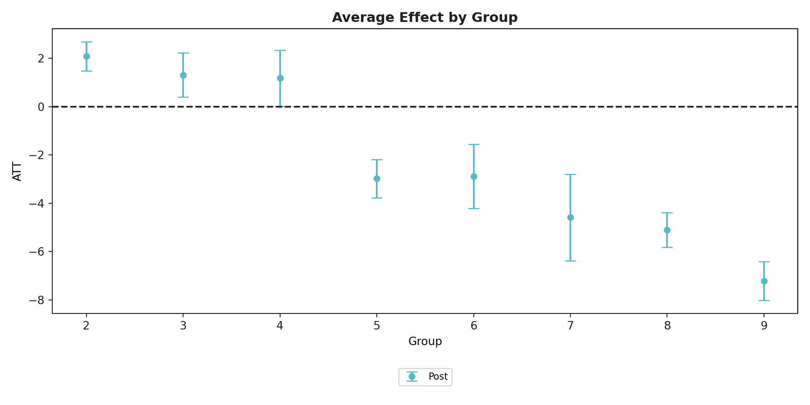

pip install csdid
pip install git+https://github.com/d2cml-ai/DRDIDcsdid
Python package for doubly-robust and ipw DiD estimator (callaway and sant’anna 2021)
csdid is a package that implements the DiD estimators proposed by Callaway and Sant’Anna (2021) that solves the bias of the TWFE estimator in staggered DiD. Documentation can be found here.
Install the package by inputting the following into the terminal:
sample code
Start by loading packages and the data:
from csdid.att_gt import ATTgt
import pandas as pd
df = pd.read_csv('df.csv')We first create the estimation object with the ATTgt() function, then fit the model with the .fit() method.
Note: id variable should be transformed to an integer variable before starting. Set cohort = 0 for never-treated units.
csdid = ATTgt(
yname = "outcome",
gname = "cohort", # cohort = 0 for never-treated
idname = "id", # must be a integer-variable
tname = "time",
xformla = f"outcome ~ covar", # (optional)
control_group = "notyettreated", # use "nevertreated" if large sample
data = df,
)
mod = csdid.fit(est_method = 'dr') # switch to ipw if issuesWe use the aggte() method to aggregate our matched treatment effects into an overall treatment effect.
mod.aggte(typec = 'simple')#>
#>
#> ATT Std. Error [95.0% Conf. Int.]
#> -0.9761 0.5204 -1.9961 0.0439
#>
#>
#> ---
#> Signif. codes: `*' confidence band does not cover 0
#> Control Group: None ,
#> Anticipation Periods: 0
#> Estimation Method: Doubly Robust
#>
#>
#> <csdid.att_gt.ATTgt object at 0x176bd9fd0>We can estimate dynamic treatment effects with the .aggte() method and plot with the .plot_aggte() method.
mod.aggte(typec = 'dynamic')#>
#>
#> Overall summary of ATT's based on event-study/dynamic aggregation:
#> ATT Std. Error [95.0% Conf. Int.]
#> 0.7669 0.2456 0.2856 1.2483 *
#>
#>
#> Dynamic Effects:
#> Event time Estimate Std. Error [95.0% Simult. Conf. Band
#> 0 -7 0.7884 0.4154 -0.0257 1.6026
#> 1 -6 -0.7444 0.5244 -1.7722 0.2835
#> 2 -5 0.0099 0.3829 -0.7405 0.7603
#> 3 -4 0.0249 0.3091 -0.5809 0.6307
#> 4 -3 0.1380 0.2788 -0.4085 0.6845
#> 5 -2 0.3772 0.3049 -0.2203 0.9748
#> 6 -1 -0.0628 0.2931 -0.6372 0.5116
#> 7 0 -4.8345 0.4018 -5.6220 -4.0469 *
#> 8 1 -3.5553 0.4467 -4.4309 -2.6798 *
#> 9 2 -2.0860 0.3892 -2.8488 -1.3233 *
#> 10 3 -0.3910 0.5576 -1.4839 0.7019
#> 11 4 0.8165 0.4855 -0.1351 1.7681
#> 12 5 1.9183 0.7314 0.4847 3.3518 *
#> 13 6 4.8726 0.3282 4.2292 5.5159 *
#> 14 7 4.5839 0.3360 3.9254 5.2423 *
#> 15 8 5.5782 0.6757 4.2539 6.9025 *
#> ---
#> Signif. codes: `*' confidence band does not cover 0
#> Control Group: None ,
#> Anticipation Periods: 0
#> Estimation Method: Doubly Robust
#>
#>
#> <csdid.att_gt.ATTgt object at 0x176bd9fd0>mod.plot_aggte()We can also aggregate effects by initial treatment period group, and with the ggdid() function:
mod.aggte(typec = 'group')#>
#>
#> Overall summary of ATT's based on group/cohort aggregation:
#> ATT Std. Error [95.0% Conf. Int.]
#> -2.2754 0.1839 -2.6358 -1.915 *
#>
#>
#> Group Effects:
#> Group Estimate Std. Error [95.0% Simult. Conf. Band
#> 0 2 2.0844 0.3110 1.4750 2.6939 *
#> 1 3 1.3054 0.4957 0.3339 2.2770 *
#> 2 4 1.1756 0.6094 -0.0188 2.3700
#> 3 5 -2.9813 0.3828 -3.7316 -2.2311 *
#> 4 6 -2.8821 0.6997 -4.2534 -1.5108 *
#> 5 7 -4.5846 0.8311 -6.2134 -2.9558 *
#> 6 8 -5.1020 0.3839 -5.8544 -4.3495 *
#> 7 9 -7.2184 0.3954 -7.9933 -6.4436 *
#> ---
#> Signif. codes: `*' confidence band does not cover 0
#> Control Group: None ,
#> Anticipation Periods: 0
#> Estimation Method: Doubly Robust
#>
#>
#> <csdid.att_gt.ATTgt object at 0x176bd9fd0>mod.plot_aggte()